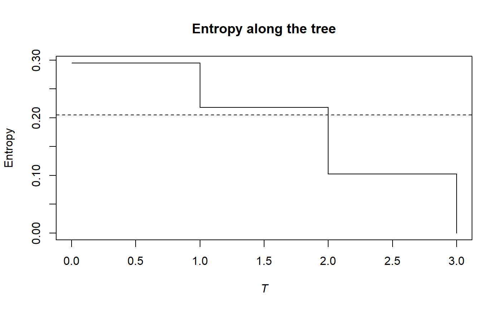

Phylogenetic Beta Entropy of a community
PhyloBetaEntropy.RdCalculates the phylogenetic beta entropy of order \(q\) of a a community belonging to a metacommunity.
PhyloBetaEntropy(NorP, NorPexp = NULL, q = 1, Tree, Normalize = TRUE, …) bcPhyloBetaEntropy(Ns, Nexp, q = 1, Tree, Normalize = TRUE, Correction = "Best", CheckArguments = TRUE) # S3 method for ProbaVector PhyloBetaEntropy(NorP, NorPexp = NULL, q = 1, Tree, Normalize = TRUE, …, CheckArguments = TRUE, Ps = NULL, Pexp = NULL) # S3 method for AbdVector PhyloBetaEntropy(NorP, NorPexp = NULL, q = 1, Tree, Normalize = TRUE, Correction = "Best", …, CheckArguments = TRUE, Ns = NULL, Nexp = NULL) # S3 method for integer PhyloBetaEntropy(NorP, NorPexp = NULL, q = 1, Tree, Normalize = TRUE, Correction = "Best", …, CheckArguments = TRUE, Ns = NULL, Nexp = NULL) # S3 method for numeric PhyloBetaEntropy(NorP, NorPexp = NULL, q = 1, Tree, Normalize = TRUE, Correction = "Best", …, CheckArguments = TRUE, Ps = NULL, Ns = NULL, Pexp = NULL, Nexp = NULL)
Arguments
| Ps | The probability vector of species of the community. |
|---|---|
| Pexp | The probability vector of species of the metacommunity. |
| Ns | A numeric vector containing species abundances of the community. |
| Nexp | A numeric vector containing species abundances of the metacommunity. |
| NorP | A numeric vector, an integer vector, an abundance vector ( |
| NorPexp | A numeric vector, an integer vector, an abundance vector ( |
| q | A number: the order of entropy. Default is 1. |
| Tree | An object of class |
| Normalize | If |
| Correction | A string containing one of the possible corrections: currently, only |
| … | Additional arguments. Unused. |
| CheckArguments | Logical; if |
Details
The phylogenetic entropy is the generalization of HCDT entropy to unequal species distances (Pavoine et al., 2009).
Calculation relies on TsallisBeta and PhyloApply.
Bias correction requires the number of individuals to estimate sample Coverage. Use bcPhyloBetaEntropy and choose the Correction.
Note that beta entropy value is related to alpha entropy (if \(q\) is not 1) and cannot be compared accross communities (Jost, 2007). Beta entropy of a community is not meaningful in general, do rather calculate the PhyloDiversity of the metacommunity.
The functions are designed to be used as simply as possible. PhyloBetaEntropy is a generic method. If its first argument is an abundance vector, an integer vector or a numeric vector which does not sum to 1, the bias corrected function bcPhyloBetaEntropy is called. Explicit calls to bcPhyloBetaEntropy (with bias correction) or to PhyloBetaEntropy.ProbaVector (without correction) are possible to avoid ambiguity. The .integer and .numeric methods accept Ps or Ns arguments instead of NorP for backward compatibility.
Value
A PhyloEntropy object containing entropy values at each cut of the tree.
References
Jost (2007), Partitioning diversity into independent alpha and beta components. Ecology 88(10): 2427-2439.
Marcon, E., Herault, B. (2015). Decomposing Phylodiversity. Methods in Ecology and Evolution 6(3): 333-339.
Pavoine, S., Love, M. S. and Bonsall, M. B. (2009). Hierarchical partitioning of evolutionary and ecological patterns in the organization of phylogenetically-structured species assemblages: Application to rockfish (genus: Sebastes) in the Southern California Bight. Ecology Letters 12(9): 898-908.
See also
TsallisBeta, bcPhyloBetaEntropy, PhyloDiversity
Examples
# Load Paracou data (number of trees per species in two 1-ha plot of a tropical forest # and their taxonomy) data(Paracou618) # Ps is the vector of probabilities Ps <- as.ProbaVector(Paracou618.MC$Ps) # Probability distribution of the first plot Ps1 <- as.ProbaVector(Paracou618.MC$Psi[, 1]) # Calculate the phylogenetic Shannon beta entropy of the plot summary(PhyloBetaEntropy(Ps1, Ps, 1, Paracou618.Taxonomy) -> e)#> beta phylogenetic or functional entropy of order 1 of distribution - #> compared to - #> with correction: None None None #> Phylogenetic or functional entropy was calculated according to the tree #> Paracou618.Taxonomy #> #> Entropy is normalized #> #> Entropy equals: 0.2323112plot(e)# Ns is the vector of abundances of the metacommunity Ns <- as.AbdVector(Paracou618.MC$Ns) # Abundances in the first plot Ns1 <- as.AbdVector(Paracou618.MC$Nsi[, 1]) # Calculate the phylogenetic Shannon beta entropy of the plot summary(bcPhyloBetaEntropy(Ns1, Ns, 1, Paracou618.Taxonomy, Correction = "Best") -> e)#> beta phylogenetic or functional entropy of order 1 of distribution - #> with correction: Best #> Phylogenetic or functional entropy was calculated according to the tree #> Paracou618.Taxonomy #> #> Entropy is normalized #> #> Entropy equals: 0.2049819plot(e)